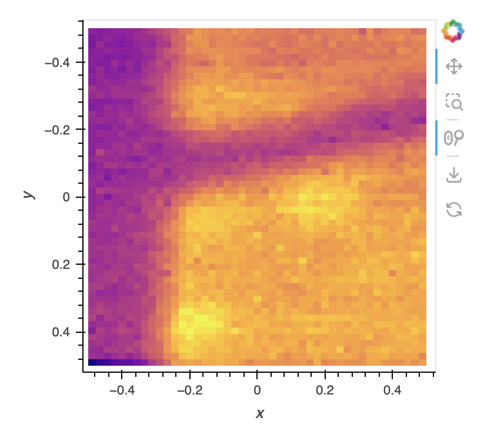
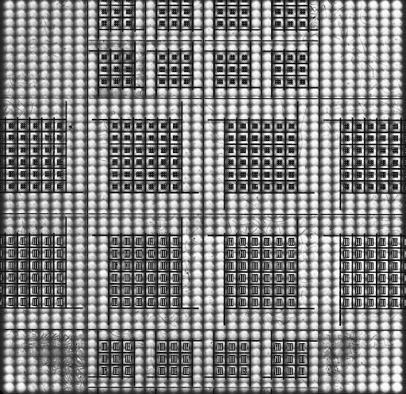
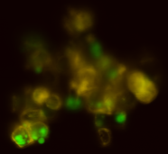

Data Analysis Workflows

Hyperspectral Exploration and PCA dimensional reduction
Jan 16, 2024 by Morgan Wall
Hyperspectral datasets from confocal microscopes or other spectral imaging systems (CL etc) need technqiues to reduce these 3D datasets into interpretable 2D information. This workflow takes data hyperspectral PL or Raman maps from the hip_microscope, allows for interactive exploration of the data, and provides interactive Principal Component Analysis routines.

